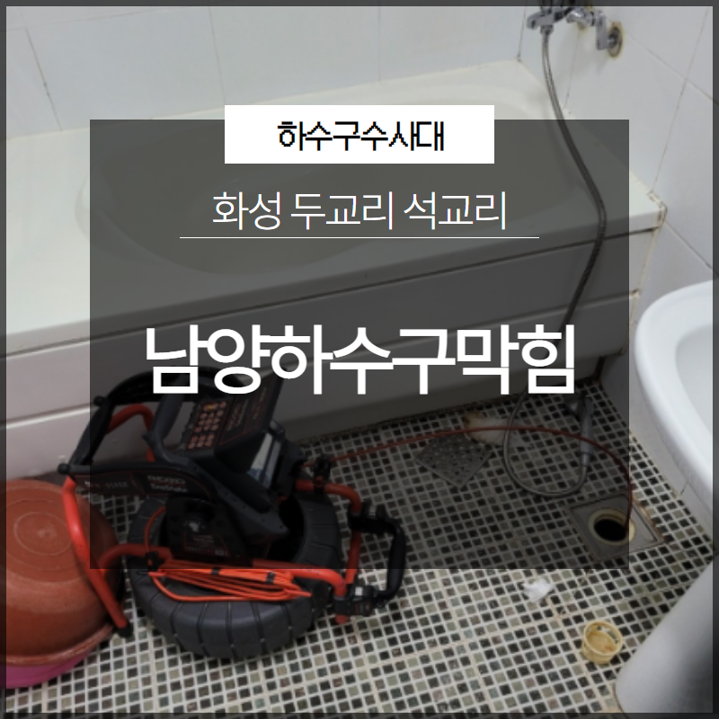
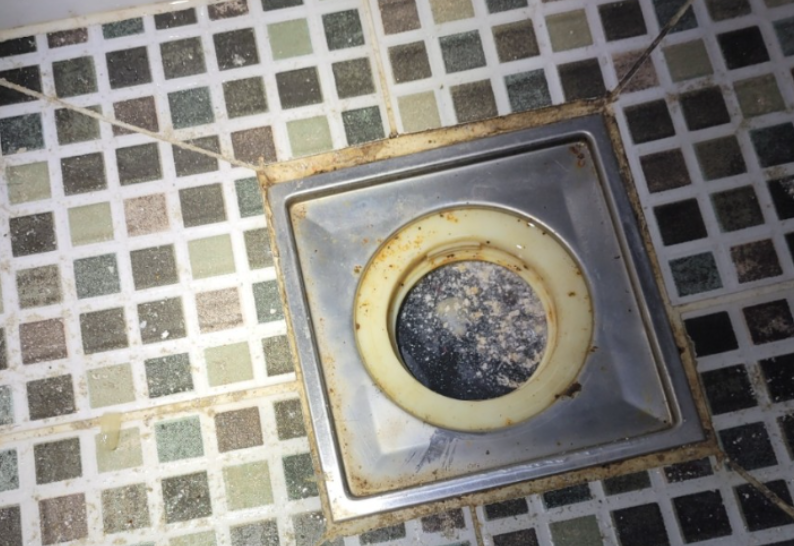
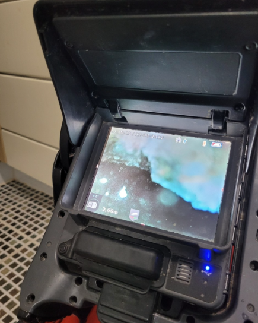
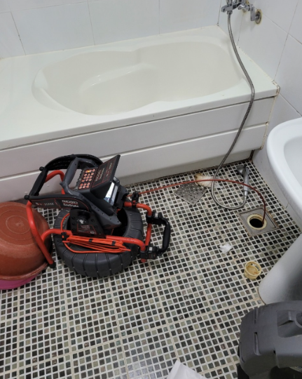
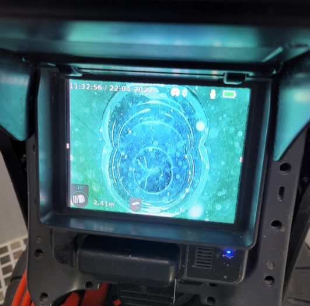
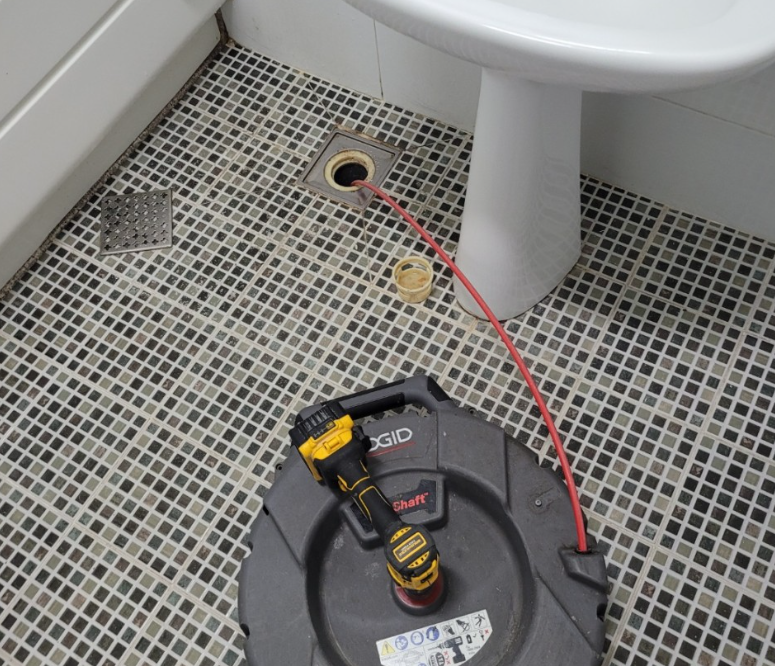
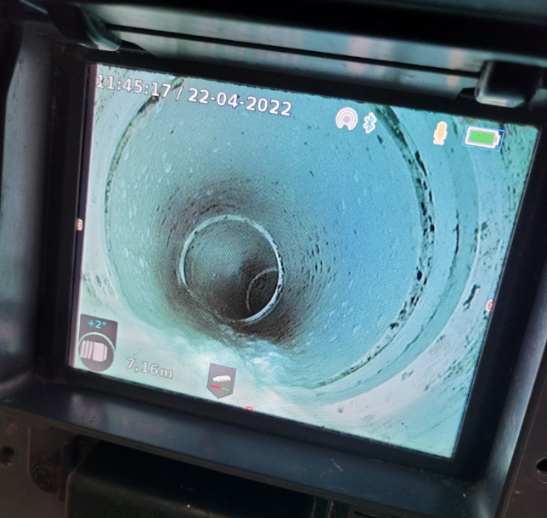

🏠 화성 남양하수구막힘 두교리 석교리 확실한 원인 파악!
화성 남양 싱크대막힘 전문 시공 후기

📋 작업 개요
- 위치: 화성 남양, 남양, 화성
- 서비스 유형: 싱크대막힘, 변기막힘, 하수구막힘, 배관막힘, 역류해결, 배관청소, 고압세척
- 작업 일시: 2023. 6. 17. 0:50
- 업체명: 하수구수사대 (010-5615-2118)
🔍 문제 상황
반갑습니다. 하수구수사대입니다.
이번 시간은 화성 남양하수구막힘 두교리 석교리 관련 내용 살펴보도록 하겠습니다. 일상생활에서 사용하는 싱크대, 욕실, 변기 등에 조금씩 들어가는 이물질은 문제 될 것이 없다고 생각하시는 경향이 강한 편입니다. 하지만 주의해야 할 것은 이러한 작은 이물질이 누적되면서 큰 덩어리로 변한다는 것입니다. 이러한 것을 방치하게 된다면 하수구가 막히는 상황까지 갈 수 있습니다.
하수구가 막히게 된다면
여러모로 불편함이 따를 수밖에 없을 것입니다. 배관이 연결된 곳은 이러한 영향을 받을 수밖에 없기에 주의를 기울여야 할 것입니다. 최근 막힘 현상으로 의뢰를 주신 고객님의 집도 이러한 어려움을 겪고 있었습니다. 욕실의 하수구 역류로 이미 심한 악취가 나고 있었기 때문입니다.

🔎 원인 분석
💡 전문가 진단: 하수구가 막히게 된다면
역류는 물이 흘러가야 하는 것이 원래 방향대로 흘러가지 않고 거꾸로 다시 올라오는 것을 말합니다. 배관 등에서 이물질이 점점 차오르면서 통로까지 다 막게 되거나 외부 하수구가 이물질 등으로 막혀있게 된다면 역류 되는 현상이 생기게 되는 것입니다.
역류를 발견한다면 자체적으로 해결하는 것보다는 저희와 같은 업체에 바로 의뢰를 주시는 게 현명한 선택입니다. 오히려 자가 판단하고 해결하려고 한다면 더 크게 일을 키울 수 있기 때문입니다.
하수구수사대에서는
화성 남양하수구막힘 두교리 석교리에 도착하여 어떠한 상태인지 확인하는 작업을 거치게 됩니다. 내시경 카메라로 내부를 살펴보았습니다. 배관 깊숙이 보니 오염 물질 등이 많이 가라앉아 있는 것이 보였습니다.
고객님의 문제도 있었지만, 무엇보다 외부 하수구의 문제도 있었습니다. 냄새가 많이 발생하는 것도 이러한 영향일 수도 있기에 원인 파악이 중요하다고 볼 수 있습니다. 역류 상황을 판단하고 나서 꽤 심각한 것을 느끼게 되었습니다.

🔧 작업 과정
내시경 카메라를 통해
문제를 볼 수 있었습니다. 보기만 하더라도 온갖 찌꺼기들이 있었습니다. 아무래도 청소가 필요했습니다. 꽉 차 있는 이물질을 제거하는 것이 필요했습니다. 이물질을 제거하고 나서 별도 처리 진행을 하였습니다.
입구에 있는 이물질을 제거하니 어느 정도 배관의 시야가 확보할 수 있게 되었습니다. 일반적으로 하수구를 청소할 때에는 고압 세척기 등을 사용하는 편입니다. 여러 이물질을 제거하고 나서 다시 내시경 카메라로 배관을 확인하였습니다.
다행히도 고압 세척은 필요하지 않았습니다. 세밀하게 작업할 샤프트 장비를 투입해 내부로 넣어 이물질을 잘게 분쇄하는 청소 작업은 진행하였습니다. 큰 이물질이 덕지덕지 붙어 있는 기름때도 깔끔하게 없앨 수 있습니다.
배관 전체 스케일링을 하고 더 깔끔하게 이물질을 없앴습니다. 이러한 청소 작업을 반복적으로 하였습니다. 그리고 다시 내시경 카메라로 다시 확인하였습니다. 눈으로 보이는 이물질을 제거하는 것에는 작업이 순조롭게 진행되었습니다.
그러나 배관 벽면에는 까만 기름때가 끼어 있어 샤프트로 작업을 진행하였습니다. 제거를 도와드렸습니다. 마무리하고 이제 실내로 돌아갔습니다. 왜냐하면, 정상적으로 물을 부어 역류 현상이 없는지 테스트해야 했기 때문입니다.
역류 현상은 말끔히 없어진 것을 확인하였습니다. 작업을 마무리하고 고객님에게 알려드렸습니다. 막힘 현상으로 고생하신다면 언제든지 하수구수사대로 문의 주시길 바랍니다. 친절한 상담 진행 도움드리도록 하겠습니다.


✅ 작업 완료
지금까지 하수구수사대에서
화성 남양하수구막힘 두교리 석교리 관련 내용 알아보았습니다.




⚠️ 주방 싱크대 배관 막힘 예방 수칙
- ✅ 기름기가 묻은 식기나 프라이팬은 설거지 전 키친타올로 반드시 기름때를 닦아내세요.
- ✅ 주기적으로 싱크대 개수대에 뜨거운 물을 가득 받아 한 번에 내려 배관 내부 기름을 씻어내세요.
- ✅ 배수구 거름망을 미세한 필터로 사용하시고 음식물 찌꺼기가 틈으로 새어 들지 않게 관리하세요.
- ✅ 베이킹소다와 식초를 뜨거운 물과 함께 일주일에 한 번씩 부어주면 배관 살균과 막힘 예방에 좋습니다.
💡 핵심 정리
- 확실한 장비 작업(내시경 점검 및 샤프트 스케일링)으로 원인을 뿌리 뽑습니다.
- 작업 후 1년 이내에 동일한 부위 재발 시 100% 무상 A/S 서비스를 보장합니다.
- 서울 · 경기 · 인천 전 지역에 24시간 언제든 긴급 출동할 수 있도록 항시 대기 중입니다.
❓ 자주 묻는 질문 (FAQ)
🚨 화성 남양 싱크대막힘 문제로 고민이신가요?
정확한 원인 진단과 확실한 시공으로 재발 없는 해결을 약속드립니다.
24시간 긴급 출동 | 서울 · 경기 · 인천 전지역 | 1년 내 재발 시 무상 A/S